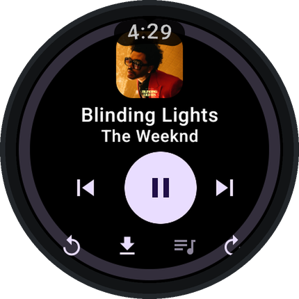
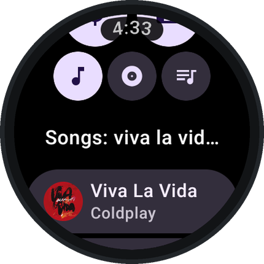
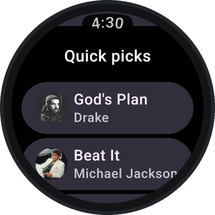
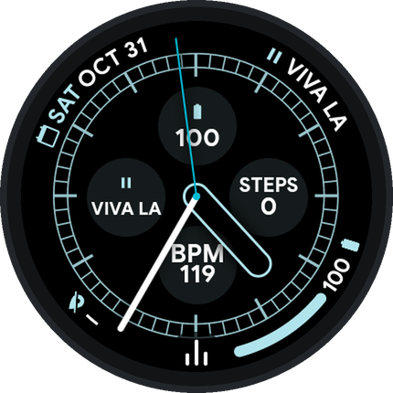
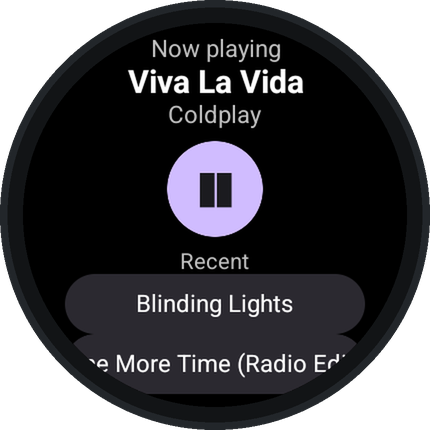
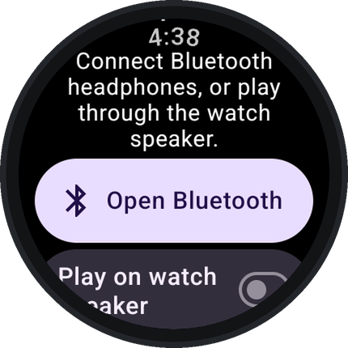

What it does

Plays on its own
Streams YouTube Music over Wi-Fi or LTE. Turn the crown to change the volume.

Search anything
Find songs, albums and playlists by voice or keyboard.

Music picked for you
Quick picks, mixes and your playlists, synced from your YouTube Music account.

Play from the watch face
Add the Wavelet complication to your watch face to play and pause with one tap.

A Tile
Swipe to see what's playing and jump back into recent songs.

Headphones or speaker
Plays through Bluetooth headphones, or through the watch speaker if you turn that on.
More features
- Offline: download songs, or let Wavelet keep recently played songs cached, and listen without a connection.
- Your account: sign in with the Wavelet phone app (or on the watch, if it has a browser) for your liked songs, playlists and uploads.
- Autoplay of similar songs, volume normalization, skip silence, a sleep timer and synced lyrics.
- Low data use by default, to save battery.
Install
- Download
Wavelet-watch.apk. - On the watch, open Settings → System → About and tap Build number seven times. Then in Developer options turn on ADB debugging and Wireless debugging.
- Install it from a computer on the same Wi-Fi:
adb pair <watch-ip>:<pairing-port>adb connect <watch-ip>:<port>adb install Wavelet-watch.apk
Or use a phone app that installs APKs on a watch. - Optional: install
Wavelet-phone.apkon your phone to sign in to your account from there.
All releases and checksums are on the releases page.
Questions
Is it free?
Yes. Wavelet is free, has no ads, and its source code is public under the GPL-3.0 license.
Do I need my phone?
No. Wavelet plays on the watch over Wi-Fi or LTE. The phone app is only an easier way to sign in.
Do I need to sign in?
No. Search and playback work without an account. Signing in adds your liked songs, playlists and personal recommendations.
Which watches work?
Wear OS 3 or newer, such as Pixel Watch, Galaxy Watch 4 and later, and TicWatch.